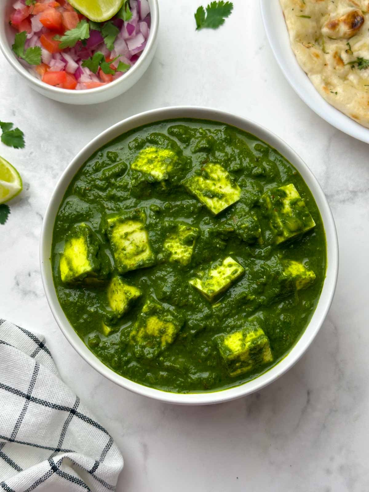

Home
Palak Paneer

Palak Paneer: Description
Palak Paneer is a popular Indian vegetarian dish made with soft paneer cubes cooked in a smooth, creamy spinach gravy. The spinach is blended with aromatic spices and lightly seasoned to create a rich, nutritious, and flavorful curry that is commonly served with roti, naan, or rice.
Ingredients
- 250 g paneer, cubed
- 250–300 g fresh spinach (palak)
- 1 medium onion, chopped
- 2 medium tomatoes, chopped
- 1 tsp ginger-garlic paste
- 1–2 green chillies
- 1–2 tbsp oil or ghee
- ½ tsp cumin seeds
- ¼ tsp turmeric powder
- ½ tsp coriander powder
- ½ tsp garam masala
- 2–3 tbsp cream (optional)
- Salt, to taste
- Water
- Fresh coriander (optional)
step
- Wash the spinach thoroughly.
- Blanch the spinach in boiling water for 2–3 minutes.
- Transfer it to cold water to retain its green color.
- Blend spinach with green chillies into a smooth puree.
- Heat oil in a pan and add cumin seeds.
- Add chopped onions and sauté until lightly golden.
- Add ginger-garlic paste and cook for a minute.
- Add chopped tomatoes, turmeric, coriander powder, and salt.
- Cook until the tomatoes soften and the masala is well cooked.
- Add the spinach puree and simmer for 5–7 minutes.
- Add paneer cubes and gently mix.
- Add garam masala and optional cream.
- Simmer for another 2–3 minutes without overcooking the spinach.
- Serve hot with roti, naan, or rice.